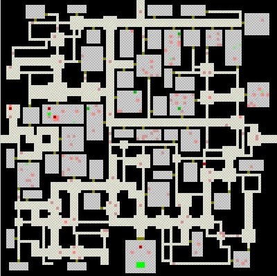
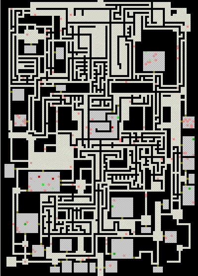

Two Maps
Tunnelers work best right now on large maps - they need them to create
different types of terrain, where players can wage strategic battles with hordes of
MOBs. Small maps made by Tunnelers tend to look similar to each other,
though of course the actual paths are always different, and the design file
can still be used to determine the width of tunnels, the frequency of anterooms,
and the number and size of rooms. The following map demonstrates how Tunnelers
work on a small map. One room with an extra big treasure has been pre-placed at
the bottom of the map,
and surrounded with a guaranteed-closed wall, so there will never be
any entrance to this room but the pre-placed one. This design is meant to have
an entrance at the top, and two exits at the sides of the map. There are
almost always many different paths from the entrance to the treasure room and
on to the exits. Imagine playing this with a revealed map where you can
see all the MOBs that are moving through the tunnels.
small dungeon with pre-placed treasure room

The following design is an experiment: A labyrinth constructed inside a dungeon.
We start with some open areas where RandCrawlers will spring forth, a
bunch of Tunnelers that make very wide Tunnels, and a set of 3 design Crawlers
placed so as to make sure that Crawlers will eventually enter the Tunnels.
To top it all off, soon after the design Crawlers have entered the Tunnels,
more Crawlers are placed randomly inside the Tunnels. These have parameters
that make them behave like bark beetles, leaving walls and tunnels that are
formed like the letters of a strange alien script.
Like in the chokepoint in a labyrinth-design, we let the DungeonMaker
create rooms in the labyrinth part of the dungeon, which refers to all
areas that are
open at the start of the construction process. Since these areas are
fairly small in this design, the process runs much faster here.
I always like to watch the movie of creating a labyrinth/dungeon hybrid,
because there are a lot of surprises, and some very tricky environments get
created. But would these environments be fun to play in? I really don't know.
No doubt it depends much on the game dynamics, and unconventional dungeons
such as these would have to be playtested before any decision is made on including
them in a game. The fact that the DungeonMaker is capable of making develishly
difficult dungeons should not induce us to base a game on them. It may well be
that simpler dungeons are more fun.
labyrinth/dungeon hybrid

WARNING :
Never, ever let a player loose in a dungeon
like this without an automap.